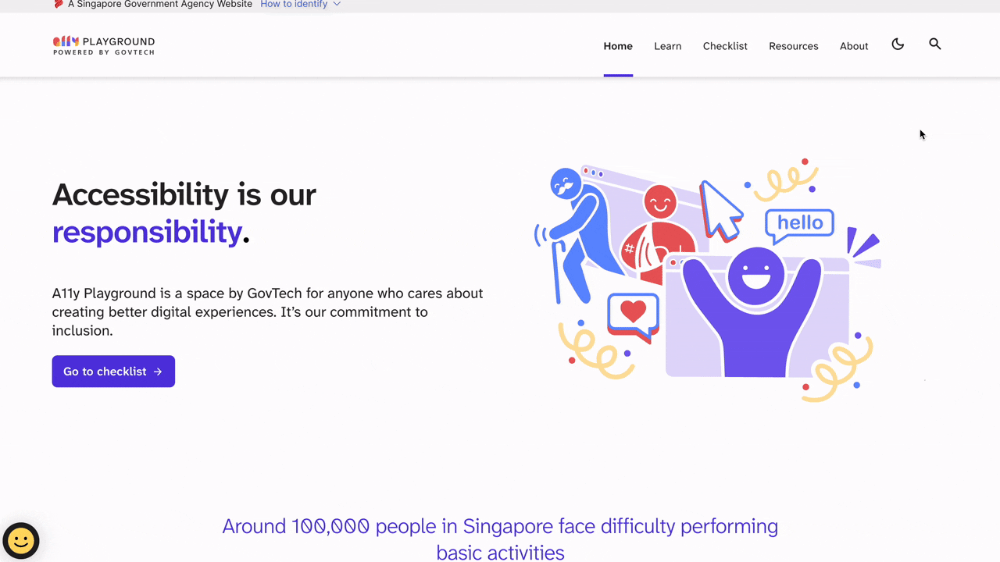
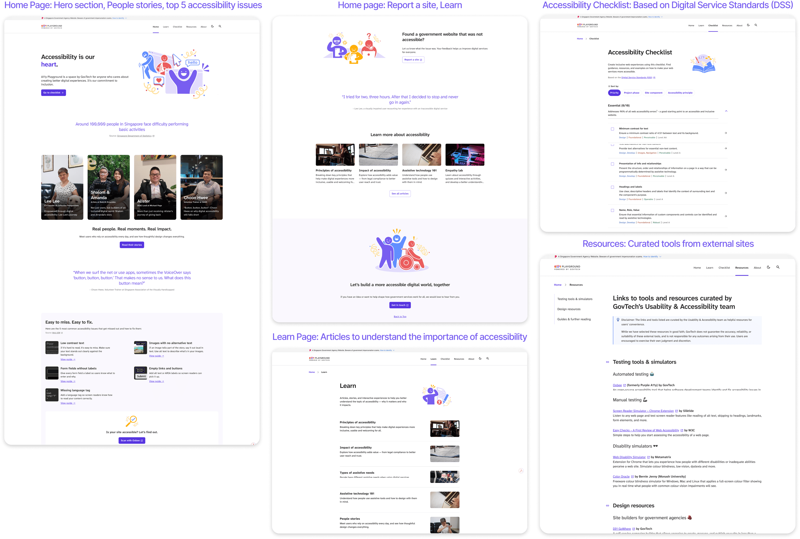

GovTech a11y Playground
UX/UI
Art Direction
User Testing
2025
"How can we empower professionals to build more accessible and inclusive digital services?"
During summer 2025, I joined GovTech Singapore as a UX/UI Designer intern. Below are some contributions I made to the a11y Playground team, which I joined halfway through their design process. My role primarily involved setting the site's art direction with illustrations, as well as participating in user interviews and synthesising data for site refinement.
My Contributions
Timeline
Team Members
As a government agency, Govtech has an even greater responsibility
to ensure that government digital services meet the needs of users
that are People with Disabilities (PWDs). During Inclusive Design
Week (IDW) 2025, our team unveiled A11y Playground, an interactive
website designed to empower digital practitioners to build more accessible
and inclusive digital services in alignment with WCAG guidelines.
👉 View site here:
https://a11y.tech.gov.sg/
📰 News Coverage:
Straits Times,
Lian He Zao Bao

Bridging the Accessibility Gap: Developing a one-stop WCAG-Centred Toolkit for Digital Practitioners
A11y Playground serves as a comprehensive one-stop toolkit for developers, designers and product managers, to enhance the inclusivity of their work. It bridges the gap between the technical requirements of WCAG and user empathy, ensuring that accessibility is actively integrated into the product lifecycle rather than treated as an afterthought.

The site consists of these main objectives and features:
✏️ Synthesise: Curated WCAG and DSS information into a
user-friendly,
categorised checklist for real-time site validation.
✏️ Empathise: Featuring real-life interviews with PWDs to
highlight
critical usability gaps and pain points, enabling digital practitioners to better understand their needs.
✏️ Prioritise: "People Stories" and "Top 5 common issues"
to bring
practitioners' attention to the most common site accessibility issues and understand PWD user's pain points.
✏️ Equip: Resource page with selected external tools, such
as
colour-blindness simulators, or design guides for a better implementation of site.
